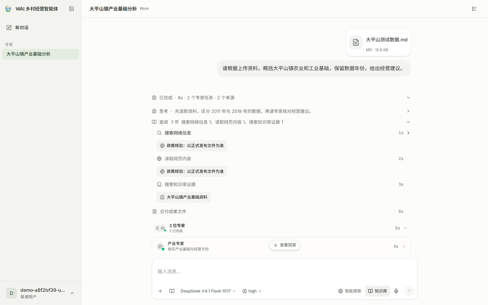
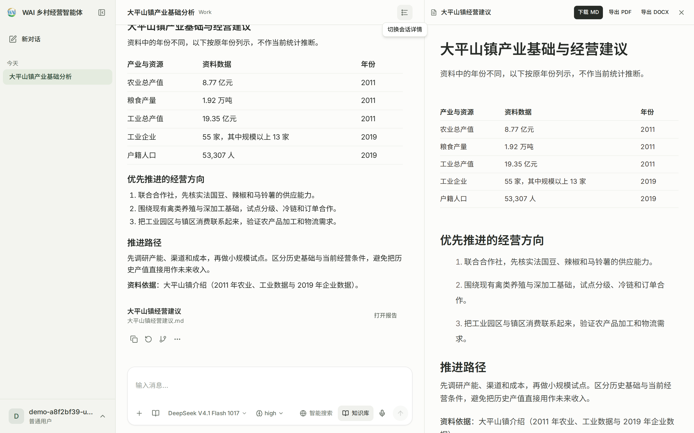

两种工作方式
Work
一个项目是否可行，通常要同时看政策能不能做、产业合不合适、资金够不够、风险在哪里。Work 让这几个方面分别分析，再汇总成一份判断，避免只从单一角度下结论。
#工作方式
Work 里有一位主顾问和八类专家。
- 主顾问先读你的问题和上传的资料，判断涉及哪些领域。
- 主顾问把任务拆开，交给相关的专家。每位专家领到一个明确的任务，只处理自己领域的部分。
- 被选中的专家同时开始分析。
- 专家完成后，主顾问读取他们的结论，取舍、整合，写成回答；需要交付时，成果写成文件放进会话工作区。
一次不一定用到八位，主顾问只请和问题有关的专家。

#八类专家
| 专家 | 页面上的名称 | 负责什么 |
|---|---|---|
| 资源分析与盘点 | 资源分析师 | 评估自然、社会、经济、文化、基础设施和数字资源 |
| 政策分析与机遇识别 | 政策专家 | 梳理政策，判断适用条件、申报路径和合规约束 |
| 产业战略分析 | 产业战略分析师 | 产业方向选择、市场需求、竞争格局和产业链设计 |
| 品牌建设与营销 | 品牌建设分析师 | 品牌定位、用户画像、渠道策略和传播方案 |
| 项目实施落地 | 项目实施分析师 | 实施路线、组织分工、里程碑、运营流程和质量管理 |
| 财务分析与资金规划 | 财务专家 | 投资估算、成本收益、现金流、融资和敏感性分析 |
| 风险评估与防控 | 风险评估分析师 | 政策、市场、经营、自然和合规风险的识别与预案 |
| 效益评估与决策支持 | 效益评估分析师 | 经济、社会、生态、文化和治理效益评估 |
#查看专家的工作
#过程区里的专家
主顾问分派任务后，过程区出现每位专家一行：
- 专家名称。
- 状态。 正在分析、排队等待，或已完成。
- 任务。 主顾问交给这位专家的任务描述。
本轮结束后，过程区标题显示参与的专家数量，例如「4 位专家」。
#打开一位专家的对话
点一位专家，右侧打开这位专家自己的对话：领到的任务、用了什么资料和工具、得出的结论都在里面。同一轮的其他专家可以在面板顶部切换查看。
右侧的会话详情里也有「专家」区块，同样可以点开每位专家。
#交付文件
需要成品文件时，Work 把成果写进会话工作区，列在右侧会话详情的「输出」里：
- 点一个文件，在页面里预览全文。
- 下载 Markdown，或导出 PDF、Word。

#提问方法
Work 适合需要多个角度的判断题，以及要交付文件的任务。写问题时，把三件事说清楚：
- 要做什么决定，或者要什么成品。
- 已有什么材料。 把资料作为附件上传，专家会在各自的任务里读取。
- 想看哪些角度。 不写也可以，主顾问会自己判断；写了，会照顾到。
示例：
请结合附件，评估我们镇发展肉鸡养殖全产业链是否可行。请从资源、产业、财务、风险几个角度分析，最后给出最先验证的两件事。请以附件为基础，编写《大平山镇乡村经营行动方案（讨论稿）》，包含现状基础、目标、产业方向、实施步骤和主要风险，写成一份可以下载的报告。其他提问方式：
我们想盘活村里 20 亩闲置集体建设用地。请分别说明政策上能不能做、做什么产业合适、需要多少投入、主要风险是什么。最后只保留你认为最值得先做的一个方案。请从效益评估的角度，说明这个项目对农户、村集体、生态分别有什么影响，以及怎样跟踪实际变化。